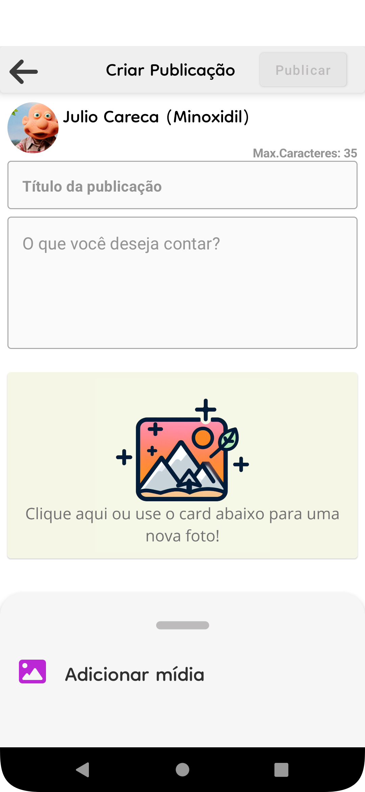

Aplicativo Android · Educação
ConnectStudents
Comunicação entre estudantes, professores e a instituição de ensino.

O projeto
O ConnectStudents foi planejado para melhorar a comunicação entre alunos, professores e a administração escolar. Publicações, notificações e compartilhamento de informações compõem a proposta do aplicativo.
Proposta e estrutura
O projeto combina desenvolvimento Android em Kotlin, Firebase e documentação UML, incluindo diagramas de casos de uso, atividades, classes e sequência.
Minha participação
Participei do planejamento e do desenvolvimento do aplicativo, conforme o registro no meu portfólio anterior.
Falta discriminar as telas, funcionalidades e tecnologias que ficaram sob minha responsabilidade.
Tecnologias do projeto
Ferramentas identificadas no código e na documentação do repositório.
Registros visuais
Screenshot preservado na pasta “Prints tirados” do repositório. Registro histórico do aplicativo, sem nova execução Android.


Explore o código
Estrutura, arquivos e documentação do projeto no GitHub.
Projeto ↗